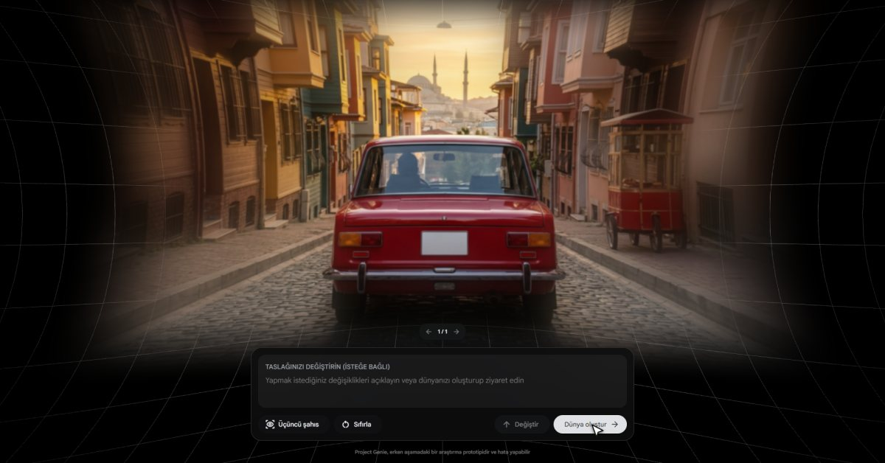
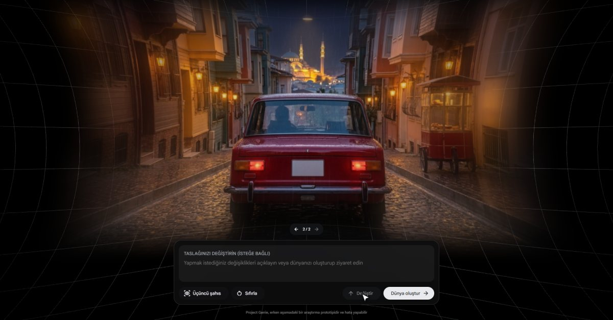
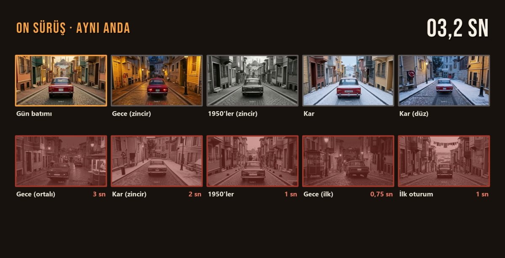
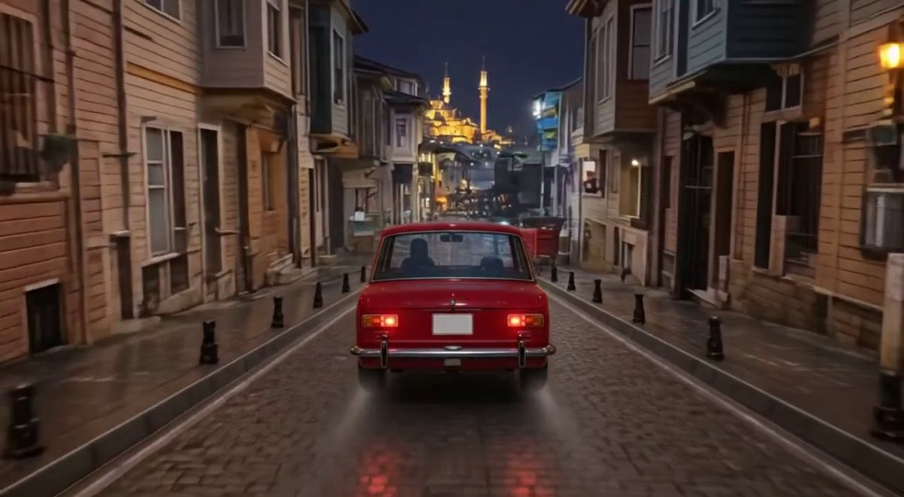
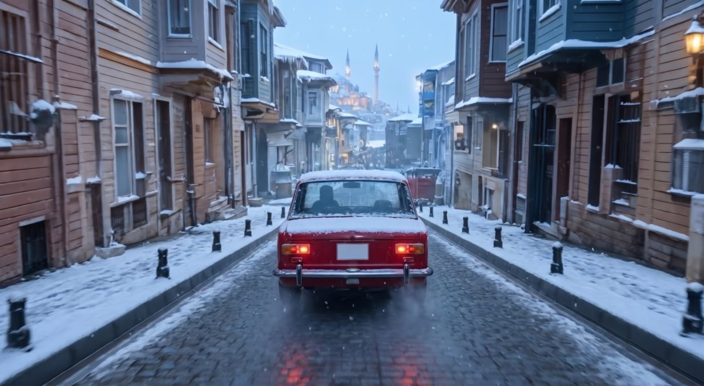

@yapayburlab · Rehber merkezi
Genie 3'te Dağılmayan Sokak: Son Kare, Yeni İlk Kare
Yapay BurLab · DÜNYA rehberi · 4 Kasım 2026
Videoda Balat'ta hiç çekilmemiş bir sokağı Google'ın dünya modeli Genie 3'te sürdük, sonra aynı sokağı Gemini ile geceye ve karlı sabaha taşıdık. Burada kullandığımız bütün metinleri ve adımları veriyoruz; sen kendi sokağınla dene.
Başlamadan önce
- Araç: Project Genie (Google DeepMind'ın dünya modeli Genie 3). Adres: https://labs.google/fx/projectgenie
- Kasım 2026 itibarıyla yalnız Google AI Ultra abonelerine ve 18 yaş üstüne açık. Ücretli bir abonelik gerektirir.
- Her dünyayı 60 saniye gezebiliyorsun. Google, Genie 4'ü 27 Ekim 2026'da duyurdu; şu an yalnız test kullanıcılarında. Bu rehber herkese açık olan Genie 3 içindir.
- Gemini (görsel düzenleme için): https://gemini.google.com
- İsteğe bağlı: FFmpeg (videodan tam çözünürlüklü kare almak için). Resmi sayfa: https://ffmpeg.org/download.html
1. Genie'de ilk dünyayı kur
- Project Genie ana sayfasında ortadaki Kendiniz oluşturun düğmesine tıkla.
- İki kutu göreceksin: ORTAM (dünya nasıl görünecek) ve KARAKTER (o dünyada neyi süreceksin).
- Formül: önce mekân, sonra ışık, sonra detaylar; sona lens ve gerçek ölçek.
Bizim ORTAM metnimiz:
Narrow historic cobblestone street in Balat Istanbul at golden hour sunset, colorful Ottoman bay-window wooden houses on both sides, a red wooden street food cart on the sidewalk, Bosphorus and a historic mosque silhouette in the distance, 35mm lens, photorealistic, full-scale real world proportions, no miniature or toy effect.Bizim KARAKTER metnimiz (arkadan ortalı kamera, amblemsiz bagaj, yazısız plaka):
Photorealistic boxy 1960s compact cherry-red classic sedan with flat rear fenders, amber-over-red rectangular tail lights, smooth flat trunk lid without any emblem, badge, logo or chrome strip, clean blank white license plate without characters, thin chrome rear bumper with two vertical guards, locked third-person rear follow camera at eye level centered strictly behind the car.Neden boş plaka? Model plakadaki yazıyı çoğu zaman bozuk üretiyor. Gerçek bir markaya benzeyen amblem de istemiyoruz.
Adım 4. Çizim oluştur'a tıkla. Bizde taslak yaklaşık 20 saniyede geldi.

Adım 5. Taslağın altındaki Taslağınızı değiştirin kutusuna tek cümle yaz ve Değiştir'e tıkla:
Make it a rainy night: wet shining cobblestones reflecting warm amber streetlights. Keep everything else exactly the same.
2. Dünyaya gir ve sür
- Dünya oluştur'a tıkla. Ekranda "yaklaşık bir dakika" yazıyor; bizde 30–40 saniye sürdü.
- Dünya açılınca W tuşunu basılı tut. Yön için ok tuşlarına kısacık dokun.
- A ve D kamerayı yana kaydırıyor; araba kadrajdan çıkmasın diye biz yalnız W ve ok tuşlarını kullandık.
- Bitirmek için ESC. Açılan ekranda kürenin altındaki üç yuvarlak simgeden ortadaki aşağı ok videoyu indirir.
- İnen videonun süresini kontrol et: bizde 22,6 sn sürdük, 18,8 sn indi; başka denemede 14 sn sürdük, 4,5 sn indi.
3. Sorun: dar sokak çabuk dağılıyor
On sürüşü saniye saniye inceledik; dokuzunda sokak 10 saniye dolmadan bozuldu (İngiliz caddesine dönüş, sarı çift şerit, duvara girme, suyun üstünde gitme).

4. Çözüm: son kare = yeni ilk kare
4a. Temiz son kareyi al
İndirdiğin videoda sokağın hâlâ düzgün olduğu son anı bul. Videoyu orada durdurup ekran görüntüsü alabilirsin. Tam çözünürlük için FFmpeg (4.5 yerine kendi saniyeni yaz):
ffmpeg -ss 4.5 -i surus.mp4 -frames:v 1 son_kare.png
4b. Gemini'de zamanı değiştir
- gemini.google.com'da yazı kutusunun solundaki artı simgesine (Yükleme ve araçlar) tıkla, Görüntü oluştur'u seç. Kutuda Resimler etiketi göründüyse doğru yerdesin.
- Aynı menüden Dosya yükleyin ile son kareyi ekle.
- İstemimiz (Türkçe):
Bu fotoğrafı düzenle, yeni sahne üretme. Her şey birebir aynı kalsın: sokak, evler, kamera açısı ve kırmızı araba aynı yerde. Sadece zamanı karlı bir kış sabahına çevir: taşlarda, çatılarda ve arabanın üstünde taze kar, yumuşak mavi sabah ışığı, hafif kar yağışı. İnsan yok, yazı yok.Adım 4. Sonuçta görselin sağ üst köşesindeki aşağı ok simgesine (Tam boyutu indir) tıkla.

4c. Kareyi Genie'ye geri ver
- Genie'de Kendiniz oluşturun → kutuların sol altındaki görsel simgesi. Çıkan bildirimi oku; yüklediğin görselin haklarına sahip olmalısın. Kabul ediyorum de ve Gemini'den indirdiğin kareyi seç.
- Görsel yüklenince Çizim oluştur adımı yok; görsel zaten başlangıç karesi.
- Kutuları yine doldur. ORTAM'a önceki hataları yasaklayan bir liste ekledik:
The same narrow historic cobblestone street in Balat, Istanbul, on a quiet snowy winter morning: wooden Ottoman bay-window houses on both sides, fresh snow on sidewalks and rooftops, soft cold blue morning light, light snowfall, Istanbul mosque domes in the distance. Strictly Istanbul architecture only: no British or European street elements, no yellow road lines, no parked cars, no vehicles, no people near the road, no traffic signs, no text. Photorealistic 35mm, full-scale.Photorealistic 1960s cherry-red classic sedan seen from directly behind, smooth flat trunk lid without any emblem, badge or logo, clean blank white license plate without characters, locked third-person rear follow camera at eye level centered strictly behind the car.Adım 4. Dünya oluştur → W. Sürüş yüklediğin kareden başlar: bir önceki sürüşün bittiği yerden, yeni zamanda devam edersin.
5. Kurguda birleştir
- Her sürüşün son temiz karesini bir sonrakinin ilk karesine bağla; geçişi kısa bir çapraz geçişle yumuşat.
- Videodaki plaka ve tabela yazılarını kurguda biz ekledik, Genie üretmedi. Bagajda çıkan küçük amblemi de kurguda sildik.
Sık yapılan hatalar
- Sokak başka ülkeye dönüyor: ORTAM'a "Strictly Istanbul architecture only: no British or European street elements, no yellow road lines" gibi bir yasak listesi ekle; sürüşü kısa tut (bizde temiz kısım genelde ilk 5–10 sn).
- Kamera arabadan kopuyor: A/D yerine ok tuşlarına kısa dokun.
- Gemini sokağı baştan çiziyor: İstemin başına "Bu fotoğrafı düzenle, yeni sahne üretme. Her şey birebir aynı kalsın." yaz.
- İnen video kısa: Sürüş süresi ile inen dosyanın süresi farklı olabiliyor; temiz kareyi inen dosyadan seç.
Sonraki adım
Yapay zekâ araçlarının sınırlarını gerçek denemelerle zorlamaya devam ediyoruz; yeni denemeler için @yapayburlab'ı takip et.